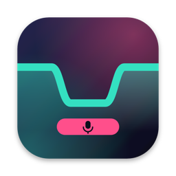
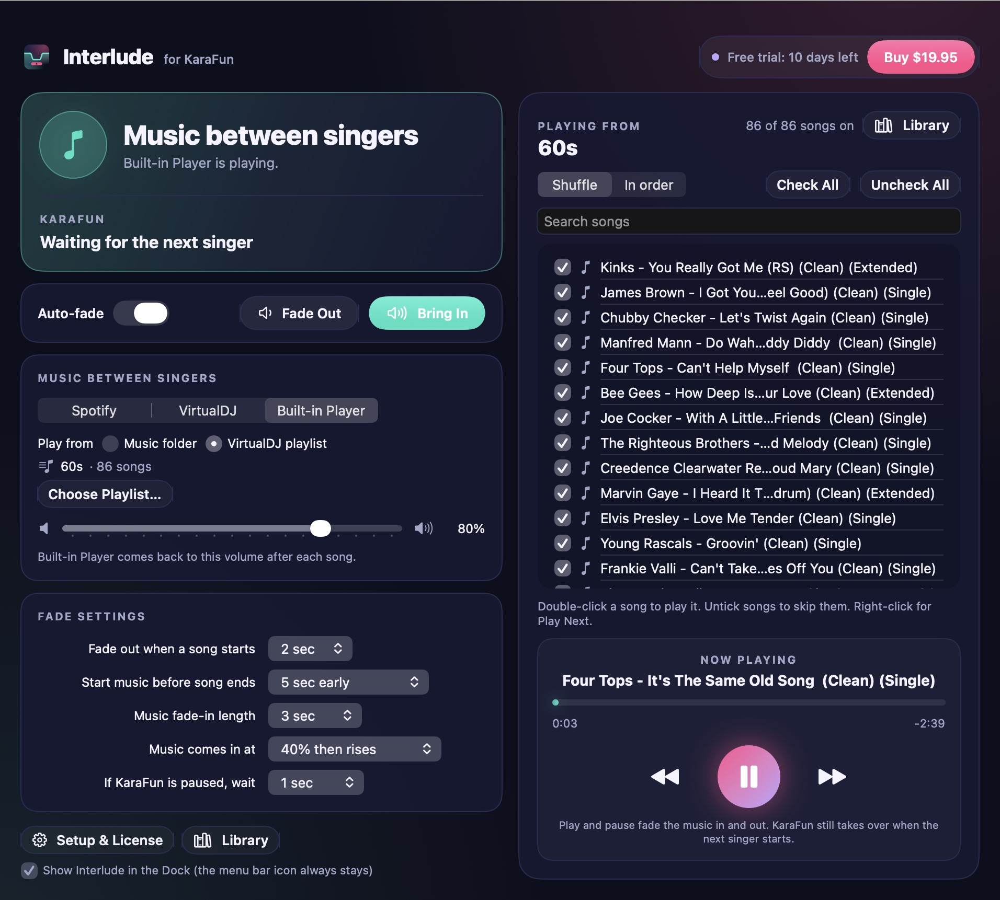
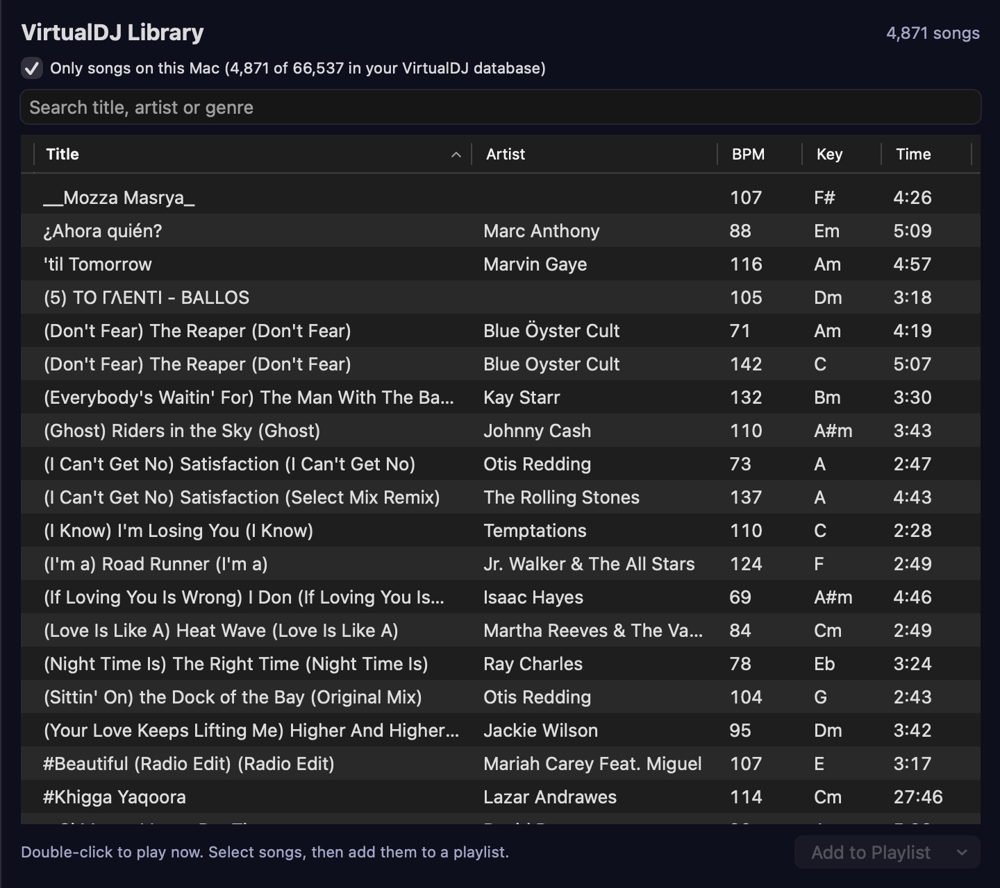
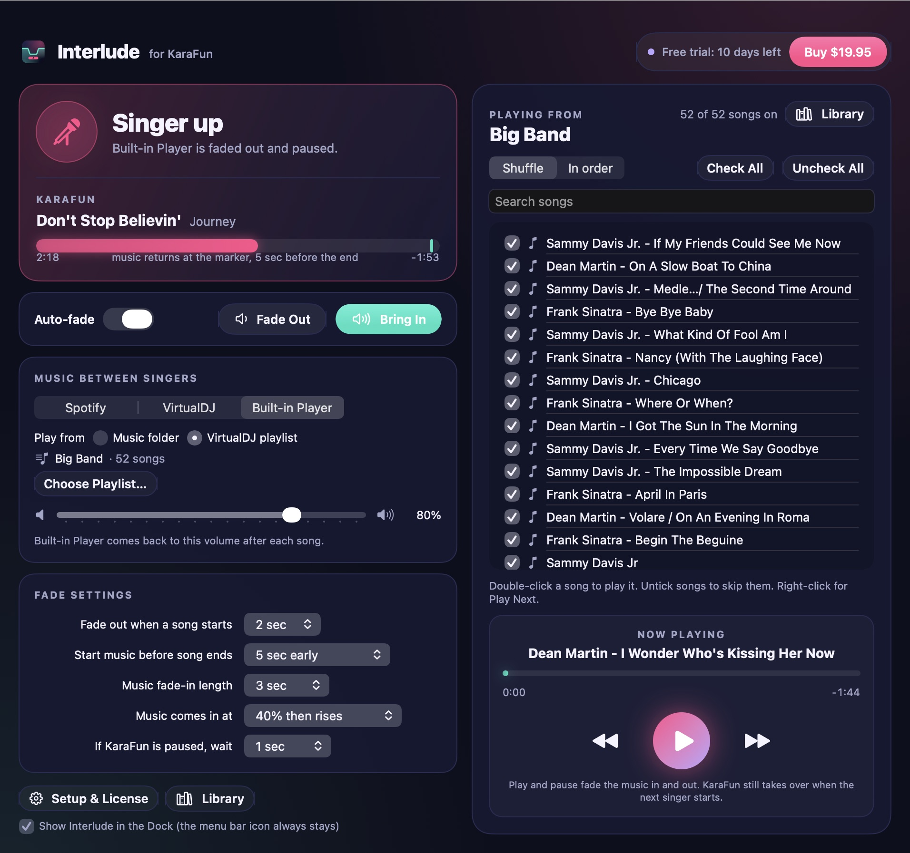
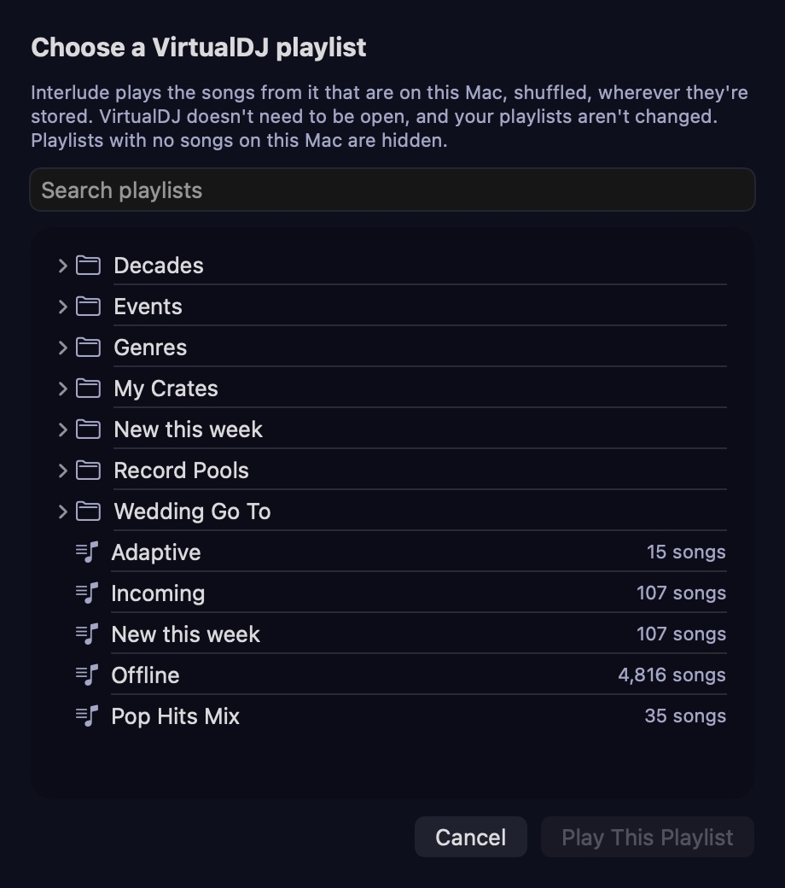
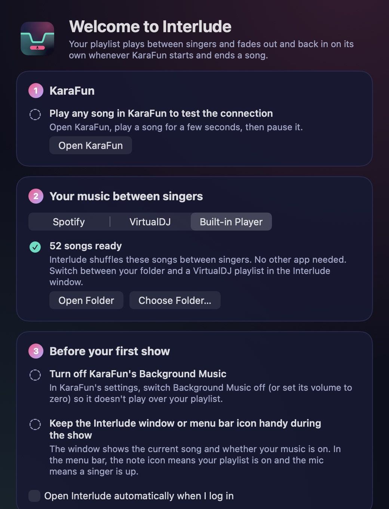

InterludeInterlude is a Mac app that plays your music between songs, then fades it out and back in by itself every time KaraFun starts and ends a track. Play your VirtualDJ lists or a folder of songs right inside Interlude, or use Spotify.
One-time purchase. No subscription. Works on 2 Macs. Requires macOS 13 or later.

One of your VirtualDJ lists, a playlist you build in Interlude, a folder of songs, Spotify, or VirtualDJ Automix. Your music, not the stock background tracks.
Hit play on the next singer. The music fades out of the way on its own.
Song ends, gets paused or skipped, and your playlist fades right back in.
The music fades out the moment the next singer starts and comes back a few seconds before their song ends. No dead air, no blasting the room.
Plays your VirtualDJ lists or a folder of MP3, M4A, WAV or FLAC files right inside Interlude. VirtualDJ doesn't even need to be open.
Browse and search every song in your VirtualDJ database by title, artist, BPM, key or genre, and build your own playlists for the night.
See every song in the list you're playing. Untick the ones you don't want, shuffle or play straight through, and line songs up with Play Next.
Previous, play/pause and next, a progress bar with time left, and double-click any song to play it now.
Pause means paused. Bring the music in during a song and it stays until the next singer. The menu bar icon shows what's happening at a glance.
Turn your music up or down during a break and that's where it comes back next time.
Choose how fast the music fades out and in, how early it returns, and how loud it starts.
Prefer Spotify or VirtualDJ Automix? Interlude fades and pauses those too.
Interlude reads your VirtualDJ database and lists, so the songs you already own are ready to go. It only reads them. Your VirtualDJ files are never changed.




A Mac running macOS 13 or later and the KaraFun app for Mac. For the music between singers, play one of your VirtualDJ lists or a folder of songs (MP3, M4A, WAV or FLAC) with Interlude's built-in player, or use Spotify or VirtualDJ Automix.
No. The built-in player plays your VirtualDJ lists and library by itself. VirtualDJ only needs to be open if you choose VirtualDJ Automix as your music source.
No. Interlude only reads them. Playlists you build in Interlude are saved separately.
Those songs are in your VirtualDJ database but their files aren't on this Mac right now, for example songs that are online-only or on a drive that isn't plugged in. Once the file is on your Mac, it plays.
Not yet. Interlude is Mac only for now.
It is emailed to you right after purchase. You can also find it any time in your customer portal. Paste it into Interlude's Setup & License window.
Yes. Click "Deactivate This Mac" in Interlude on the old Mac, or remove the old Mac in your customer portal, then activate on the new one.
No. Interlude only goes online to activate your key and to recheck it now and then. Being offline never turns it off.
Interlude controls the apps you already use. Playing music in a venue usually needs a public performance license, which is the venue's or your responsibility.